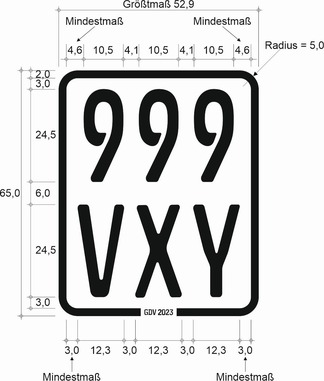
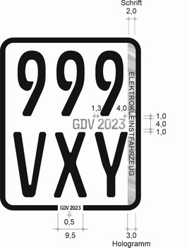

- 1.
Schematische Darstellung

Enthält eine Zeile nur eine oder zwei Ziffern oder einen oder zwei Buchstaben, so sind Zahlen und Buchstaben in der Mitte der Zeile anzubringen. Der Abstand vom Rand ist entsprechend zu vergrößern; die übrigen Abstände dürfen nur bis zum angegebenen Höchstmaß vergrößert werden.
- 2.
Die Beschriftung der Kennzeichenfolie erfolgt nach dem Schriftmuster „Schrift für Kfz-Kennzeichen“ (fälschungserschwerende Schrift – FE-Schrift). Die Beschriftung muss den Schriftmustern „Schrift für Kfz-Kennzeichen“ entsprechen. Die Schriftmuster können bei der Bundesanstalt für Straßenwesen, Postfach 10 01 50, 51401 Bergisch Gladbach, bezogen werden. Form, Größe und Ausgestaltung der Kennzeichenfolie müssen dem Muster und den Angaben der Anlage entsprechen.
- 3.
Maße der Beschriftung und des Randes| Art der Beschriftung | Schrifthöhe | Schriftbreite | Waagerechter Abstand
der Ziffern und Buchstaben
voneinander | Waagerechter Abstand der
Beschriftung vom schwarzen,
blauen oder grünen Rand
mindestens | Senkrechter Abstand der
Ziffern und Buchstaben
voneinander | Senkrechter Abstand der
Beschriftung vom schwarzen,
blauen oder grünen Rand | Breite des schwarzen,
blauen oder grünen Randes | Höhe des Rahmens
einschließlich schwarzem,
blauem oder grünem Rand | Breite des Rahmens
einschließlich schwarzem,
blauem oder grünem Rand | Außenradius an allen 4 Ecken |
|---|
| | mm | mm | mm | mm | mm | mm | mm | mm | mm | mm |
|---|
| der Plakette | 24,5 | Ziffern:
10,5
Buchstaben:
12,3 | Ziffern:
4,1
Buchstaben:
3,0 | Ziffern:
4,6
Buchstaben:
3,0 | 6,0 | 3,0 | 2,0 | 65,0 | 52,9 | 5,0 |
des unteren
Randes | 1,5 | 0,9 | mindestens 0,1 | mindestens 0,5 | – | – | – | – | – | – |
| Allgemeintoleranzen nach ISO 2768-1 – Toleranzklasse c (grob) |
- 4.
Farben
Die Farbtöne des Randes und der Beschriftung sind dem Farbregister RAL 840 HR zu entnehmen, und zwar für schwarz RAL 9005, blau RAL 5012 und grün RAL 6010. Der Farbton des Untergrundes der Plakette ist weiß nach DIN 6171 Teil 1: 03.89, Tabelle 3.
- 5.
Ergänzungsbestimmungen
Das verwendete Material muss eine hinreichende Festigkeit sowie Witterungsbeständigkeit des Aufklebers Kennzeichenfolie gewährleisten. Die Plakette samt ihrer vollflächigen Verklebung muss so beschaffen sein, dass diese beim Abziehen reißt, oder es müssen durch Augenschein deutlich erkennbare Veränderungen des Folienkörpers Kennzeichenfolie nach einem Entfernen aufgetreten sein, so dass dieser nicht wiederverwendbar wird. Das fälschungserschwerende Merkmal ist in Gestalt Form eines transparenten diffraktiven Hologrammmotivs, das dauernd fest mit der Folie verbunden ist und die Lesbarkeit der Versicherungsplaketten-Beschriftung nicht beeinträchtigt, vorzusehen. Das verwendete Motiv soll dabei die Anmutung eines Glasbruchs haben. Das Hologramm ist in Form eines durchgehenden Streifens linksbündig am rechten Rand der Versicherungsplakette transparent auszugestalten. Dieser Streifen ist unterlegt mit dem hellgrauen Schriftzug „ELEKTROKLEINSTFAHRZEUG“, der von rechts oben nach rechts unten, sowohl vertikal als auch horizontal mittig zwischen den Rahmeninnenseiten platziert, verlaufen soll. Der Schriftzug „ELEKTROKLEINSTFAHRZEUG“ ist in der Schriftart Arial Fett in Schrifthöhe 2 Millimeter in Großbuchstaben auszuführen. Zusätzlich muss zwischen den beiden Zeilen der Zahlen-Buchstaben-Kombination der Versicherungsplakette rechtsbündig in Form eines transparenten Hologramms der Schriftzug „GDV“ gefolgt von der jeweiligen Jahreszahl des Versicherungsjahres angebracht sein. Der Schriftzug „GDV“ sowie die Jahreszahl sind in der Schriftart „Euro Plate“ bzw. Schriftmuster „Schrift für Kfz-Kennzeichen“ (fälschungserschwerende Schrift – FE-Schrift) in Schrifthöhe 4 Millimeter auszuführen.
Schematische Darstellung des Hologramms
